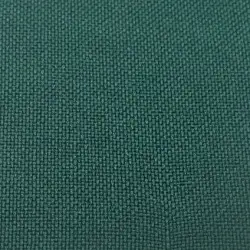

Габардин
 Першопочатково вовняна тканина. Її було створено легендарним Томасом Бербері, який заснував однойменний бренд. І класичні картаті пальта “Бербері” шиють саме з габардину.
Її розповсюдженню ми мусимо завдячувати фламандцю Жану Батісту Камбре. У ХVІІ сторіччі швець виготовив дивовижну тканину, котру до цього возили виключно східні купці.
Традиційний габардин виробляється з пряжі мериносу складним саржевим переплетенням тонких волокон. З щільної тканини шиють пальта й костюми, а з тоншої – брюки, спідниці та сукні.
Сучасна промисловість дозволяє випускати змішаний габардин та синтетичний. Такі матеріали суттєво дешевші, тому саме з них виробляють повсякденний одяг, гардини та різноманітні аксесуари.